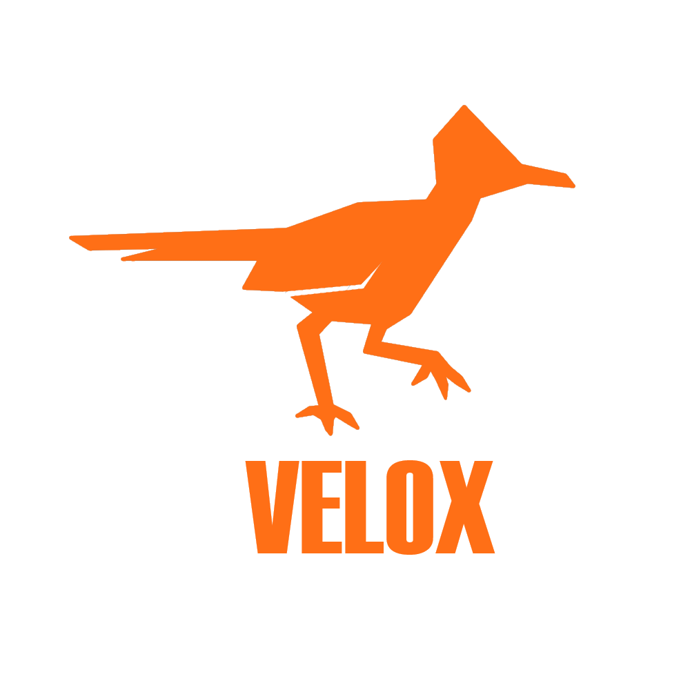

Sobre nosotros
Velox es una empresa que busca la velocdad y el mejoramiento diario de nuestros sistemas. Es un equipo compuesto de seis personas las cuales laboramos muy arduamente para ser mejores cada dia
Velox es una empresa que busca la velocdad y el mejoramiento diario de nuestros sistemas. Es un equipo compuesto de seis personas las cuales laboramos muy arduamente para ser mejores cada dia
Me llamo Luis y vivo en el estado de México. Soy un estudiante del ceyt 9 "Juan de Dios Batiz" y estoy estudiando para ser un tecnico en programación. Me apasiona mucho los relatos de Isaac Asimov y en especial la triologia de la fundación. Yo soy el que esta acrgo del mantenimiento de esta pagina y soy parte de rupo velox
Mi correo electronico es: luis.fernando.tenorio.aspiros0@gmail.com